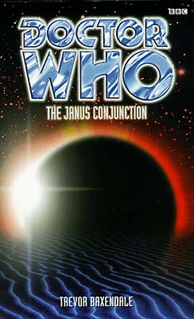

|
The Janus Conjunction
|
BASIC PLOT DOCTOR COMPANIONS MATERIALISATION CIRCUIT Pg 275 On Menda, a few days later, just in time to save Sam. PREPARATORY READING CONTINUITY REFERENCES The second line that the Doctor says in this book is "Sorry. Sorry, sorry, sorry." On the bright side, 'sorry' isn't a monosyllable. On the negative side, this is the repeating-word-nightmare Doctor that we hate. On the bright side, it suggests he's going to be really bad in this book, and he's not. Pg 15 "'Caruso will have to wait,' he said, pulling the handbrake." We see the TARDIS handbrake for the first time in The Unquiet Dead. Pg 16 "Destination: JANUS PRIME Dateline 14.09.2211 HUMANIAN ERA" Once again, the TARDIS monitors are consistent with what we saw in the Telemovie. Pg 17 "'Sam.' The man spoke swiftly and confidently. 'Number eleven. Quick as you can!'" Another reference to the well-worked out manoeuvres which the Doctor has worked out with Sam in exactly the way that he hasn't with any previous companion ever, including Ace and Bernice who would have been really obvious contenders for such a thing. Interestingly, number eleven turns out to roughly translate to 'When I say run, run'. Pg 18 "He had seen enough computers stumped by conflicting data or even simple logic puzzles to recognize that, whatever the cause, he at least had a few seconds' grace." BOSS in The Green Death is the obvious contender. The confusion that the Spidroid has to the Doctor's metabolic system is analogous to the androids' confusion with his biochemistry in The Caves of Androzani. Pg 21 "'Did - did you kill it?' The Doctor looked shocked. 'Certainly not. Magnificent creature like that? They're a lot harder to make than destroy, you know.'" Very similar to a line in Full Circle. Pg 23 "Since meeting the Doctor she had met creatures from all over the universe, including a pair of pleasant Arachnons on Dreamstone Moon." Dreamstone Moon. And they died. Horribly. Pg 25 "'We're being shot at,' the Doctor told her, casually dragging her down into the luminous dirt. 'Already? This must be some kind of record, even for you.' The Doctor shook his head. 'There was this one time in San Francisco... never mind.'" Arguably the best reference to the opening moments of the Telemovie ever. Pg 33 "He was a world away from Sam, just as on Hirath's moon, just as when he lost her for so long..." Longest Day and the Sam is Missing arc which followed. Pg 34 "She moved over to where the Doctor stood to one side wiping Lunder's blood off his fingers with a handkerchief." This habit eventually stood the Doctor in incredibly good stead as regards Sabbath when it came to Sometime Never... Pg 39 "As a rule, matter transmitters were pretty crude affairs in the early twenty-third century." This suggests that the technology hasn't advanced very far since The Seeds of Death. Pg 41 "'There are some important questions I've forgotten to ask.' 'Such as?' 'Where am I? What are you people doing here? In short: what, exactly, is going on?" How very Time and the Rani of him. Pg 45 "The Doctor smiled, left the bag of jelly babies on the table next to the bed and left." Do we need to tell you which particular Doctor was fond of jelly babies? Thought not. Pg 51 "The star charts were actually copied from those left by the Daleks after their abortive occupation of Earth in the 2160s." The Dalek Invasion of Earth. "So humankind took its first steps out of the solar system by combining its native ingenuity and determination to ride on the backs of the alien races who had already discovered interstellar travel. Once again human beings achieved a level of technology beyond their years." This is wonderfully consistent with what we learn in Fear Itself. "The Arcturans and the Mentors in particular were willing but suspicious traders." The Curse of Peladon and Mindwarp (The Trial of a Time Lord, episodes 5-8) Pg 52 "Gustav Zemler grew up in a society that matched violence with violence and then turned in on itself when the Daleks were gone. The Intercity Wars sparked and spat around the globe for decades until volunteer members of Earth's newest colonies returned to bring it back into order by force." This is consistent with, and adds to, what we learned in Legacy of the Daleks. "Zemler was only thirty-six, although he'd made quite a name for himself fighting the Cybermen" The Tenth Planet et al. Pg 54 "Zemler hated them, partly because they reminded him uncomfortably of cybermats" The Tomb of the Cybermen et al. Pg 57 On the subject of the Doctor being called 'The Doctor': "OK, it's daft, but it's just the way it is. Names stick, I guess." Yep. Go back to An Unearthly Child, and you'll discover that 'Doctor' is just a name that stuck. Pg 71 "Then she heard the sound of running water, and his voice again, singing a song about leaving hearts in San Fransisco." Probably a Telemovie reference, but interestingly, it's one of the songs he will later quote to Sabbath on the subject of his missing heart in Camera Obscura. Pg 78 "Some of my best friends have been soldiers." The Brigadier, UNIT, Ace. Pg 80 "Apparently Zemler's unit was charged with the task of eliminating a squad of Cybermen from a secure research bunker." The Tenth Planet et al. Pg 87 "His parents had died in the Dalek invasion." The Dalek Invasion of Earth, obviously. Pg 88 "There were cybermats crawling everywhere" The Tomb of the Cybermen et al. Pg 94 "This is a sub-etheric beam locator, but it can be modified to emit submeson rays of varying frequencies." We saw one of these in Genesis of the Daleks. Pg 96 "'Spiders!' he exclaimed. 'I'm not scared of them myself, although I did come across a pretty unfriendly bunch on Metebelis 3.'" Planet of the Spiders and see Continuity Cock-Ups. Pg 97 "For a moment the sight transported him back to the age of six when he had sat on a beach on Rho Priapus, the planet his mother had been deported to following the Dalek invasion." The Dalek Invasion of Earth. Pg 98 "The trial computer came out with a guilty verdict and Earth control succeeded where ther Cybermen, the Selachians, the Veltrochni and sundry other BEMs had failed - they destroyed Zemler's Special Forces unit." The Tenth Planet et al; The Murder Game and The Final Sanction; The Dark Path and Mission: Impractical; BEMs are Sydney Newman's original description of the Daleks. Pg 104 "The eyes were like fried eggs swimming in fat. The nose was just a bubbling hole over a set of uneven teeth, grinning like those of a skull. Saliva hung from the chin, along with a web of flesh which had stuck to the collar of his spacesuit. 'Hello, my pretty,' he laughed." It's not strictly continuity, but this is so like the end of episode 5 of The Talons of Weng-Chiang that it may as well be considered so. From the moment you know that the radiation sickness causes the body to dissolve, you know in your heart of hearts that this moment - the revelation of the baddie leader as the most hideously disfigured of all - is coming at you with all the subtlety of a traffic accident. Pg 125 "When I say run..." Does this need explanation? Thought not. Pg 132 "The Doctor grinned. 'At the very least I would expect disturbances in the local space-time continuum.'" Rather wonderfully, the Link is caused by a chunk of the local moons' masses being in Hyperspace. This is totally consistent with what we learn about the effects of hyperspace on normal space in Vanderdeken's Children. Almost like it was planned. Spooky. Pg 145 "Varko was having no luck with the blue box. He had tried to kick the doors in at first but they proved stronger than they looked - a lot stronger, because they had gone on to resist, with equal fortitude, the attentions of a crowbar, a laser pistol, a laser rifle and finally, a point-impact fusion grenade." Just like Four to Doomsday. Pg 153 "Don't tell me the rough-tough scourge of the Cybermen give their spiders pet names." The Tenth Planet et al. Pg 163 "'Go on, then,' she said. 'Do it. Shoot me. Show me what a man you are.'" This is like The Happiness Patrol but not as good. She also says it twice more in The Face-Eater. Pg 168 "I just thought - wouldn't it be funny if I pressed this and a can of fizzy drink dropped out?" A reference to Paradise Towers, because Baxendale hadn't mentioned that one yet. Pg 169 "The girl had a tracer implanted in her arm, set to a beta-nine frequency." It's possible that this is a reference to the android recognition belts in The Caves of Androzani, which were on beta cycles.
Pg 186 "It was one of the strangest worlds she had ever visited, alien in a way not even Skaro or Hirath had been." War of the Daleks and Longest Day. Pg 227 "'The column is not responding.' 'What a pity. Have you tried the crank handle?'" This may a reference back to the crank handle used to open the TARDIS doors in Death to the Daleks and which has reappeared in roughly every fifth NA and EDA since it first appeared back then. Pg 230 "Imagine a warp-elipsed spatial compression in a parallel time field" Warp elipses were important in Mawdryn Undead. Pg 233 "'Here you might have a chance. Another visit to Janus Prime would finish you.' 'But you're not immune, Doctor.' 'No.'" The Doctor hasn't been immune to radiation sickness since The Daleks. And, given that, he probably never has. Pg 235 "The flyer dropped like a stone before it bounced on an invisible cushion and veered to the side. The Doctor brought it quickly under control and twisted the throttle, located per tradition on the handlebar grip." The Doctor on a sci-fi motorcycle owes its origins to the Telemovie. Pg 237 "Only a god has that kind of power." Zemler is channelling Davros. Pg 238 "You're just like all the others, Doctor: no moral fibre." And now he's channelling Rorvik from Warriors' Gate. Pg 241 "'Why not? We're all dying? This way we go out with a bang.' His friend chanced a smile. 'Biggest bang in history, you mean?'" A somewhat contrived scene to reference Sarah Jane's infamous line from Revenge of the Cybermen. Pg 250 "'I've come back to do what I should have done a long time ago, Captain,' Moslei replied. 'Put you down like the mad dog you are.'" Bizarrely, this is a quote. It comes from Lucifer Rising and is specifically what the Doctor says as regards his failure to kill Davros in Resurrection of the Daleks. Pg 255 "I trained on the Mars-Venus routes three hundred years from now." Robot. Pg 259 "I once convinced a machine, a probe intelligence, that this was happening, to destroy it." Longest Day. Pg 262 "Or stay behind and go back to school in Shoreditch." The Eight Doctors. Pg 268 "We have to hold back death for as long as possible, Lunder." The leitmotif from the Telemovie. Pg 273 "Well, I've a couple of barrels of Best Old Shobogan in the cellar." A beverage first mentioned in The Eight Doctors, although the Shobogans are mentioned in The Deadly Assassin. Pg 274 "He spent half the night in a Tibetan healing trance." Possibly related to something he once said in Terror of the Zygons, or maybe The Abominable Snowmen. "And then half the night playing with his train set." The reference to the short story 'Model Train Set' from Short Trips is another reference to the OrmanBlum. Well, okay, it's originally from Love and War. But no one ever remembers that. Pg 278 "He reached into his pocket and took out a slim tube of stiff material which, with a flick of his wrist, unfurled into a light Panama hat." Sam wears the Fifth Doctor's hat. Pg 280 Reference to UNIT. OLD FRIENDS AND OLD ENEMIES NEW FRIENDS AND NEW ENEMIES CONTINUITY COCK-UPS PLUGGING THE HOLES [Fan-wank theorizing of how to fix continuity cock-ups] FEATURED ALIEN RACES Spidroids: damned big spiders which have been cybernetically enhanced. FEATURED LOCATIONS Menda, on the opposite side of the sun to Janus Prime, with its new colonists. It has a base around the Link and a town called, imaginatively enough, Newtown. IN SUMMARY - Anthony Wilson |
|
 |